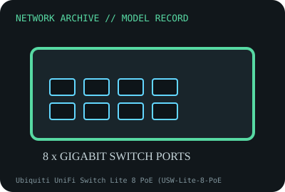

[ MODEL-SPECIFIC NETWORK HARDWARE RECORD ]
Ubiquiti UniFi Switch Lite 8 PoE (USW-Lite-8-PoE)
Eight-port managed Gigabit switch with four 802.3at PoE+ output ports. Specifications are tied to this named product; confirm the physical label, revision and source documentation.

IDENTIFICATION: Verify exact PID/model, revision, label and host support. The catalog separates nominal PHY/link specifications from measured throughput; no benchmark is asserted unless explicitly recorded.
Model-specific specifications and compatibility
| Subcategory | Managed switches |
|---|---|
| Exact product/model | Ubiquiti UniFi Switch Lite 8 PoE (USW-Lite-8-PoE) |
| Bus, ports and physical interface | Eight 10/100/1000BASE-T RJ-45 switch ports; ports 1–4 supply PoE+ (802.3at); internal AC power. |
| PHY, radio or optical interface | Fanless UniFi-managed Layer 2 switch; four PoE+ ports, 52W total PoE availability per Ubiquiti technical specifications. No SFP uplink. |
| Nominal rate (not measured) | Gigabit per-port negotiated rates; aggregate switching capacity is a vendor nominal figure, distinct from tested forwarding performance and the separate 52W PoE budget. |
| Measured throughput | No packet or PoE load test is claimed. Record port pairs, frame size, VLANs, firmware, PoE class/load and the measurement method for results. |
| Driver, OS and firmware | Adopted and managed using UniFi Network software and switch firmware. Controller/application compatibility and supported features vary by firmware release; no NIC driver applies. |
| Platform/media compatibility | Requires AC input and a UniFi Network application compatible with the current firmware. PoE output is only on four marked ports and subject to 52W total budget; confirm powered-device standard before connection. |
| Variant warning | USW-Lite-8-PoE is distinct from US-8-60W, USW-Lite-16-PoE and Flex Mini. Port count, PoE source/output, power budget and management firmware differ; do not infer PoE on all eight ports. |
Revision, operation and measurement notes
USW-Lite-8-PoE is distinct from US-8-60W, USW-Lite-16-PoE and Flex Mini. Port count, PoE source/output, power budget and management firmware differ; do not infer PoE on all eight ports.
Adopted and managed using UniFi Network software and switch firmware. Controller/application compatibility and supported features vary by firmware release; no NIC driver applies.
No packet or PoE load test is claimed. Record port pairs, frame size, VLANs, firmware, PoE class/load and the measurement method for results.
Archival, ESD and preservation notes
Log exact USW model, MAC/serial, firmware, AC rating, PoE loads and adoption state. Unplug mains before cleaning and keep away from liquid; store cool and dry with ESD precautions for board removal.
Retain source provenance and the revision/date of each supporting document. Store public records without credentials, personal information or other secrets.
Primary manufacturer and standards sources
- Ubiquiti UniFi Switch Lite 8 PoE technical specificationsPrimary manufacturer or standards reference; confirm exact part label, revision, and platform qualification.
- Ubiquiti UniFi support and software documentationPrimary manufacturer or standards reference; confirm exact part label, revision, and platform qualification.
- IEEE 802.3 Ethernet/PoE standardsPrimary manufacturer or standards reference; confirm exact part label, revision, and platform qualification.
Manufacturer source links are provided for the stated model or exact product family; use the board label and the official revision-specific compatibility list for final qualification.